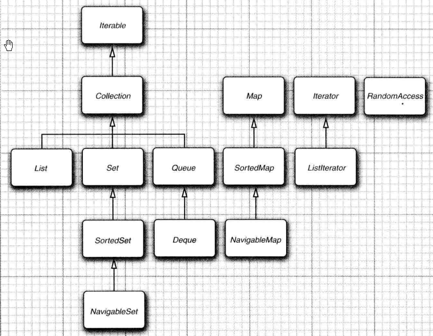
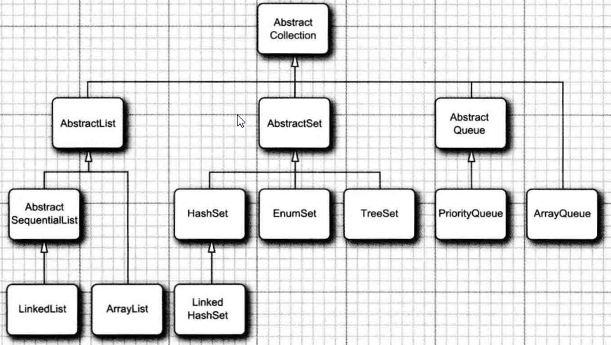
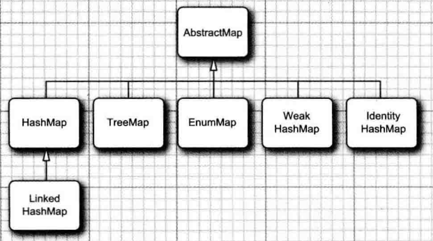

9集合
Java集合框架
- 集合框架的基本设计
- 使用方法
- 争议设计的考虑
集合的接口与实现分离
队列最简单接口
1 | public interface Queue<E> //a simplified form of the interface in the standard library |
两种实现：
- 循环数组 （顺序实现） 比链表更高效，数组容量有限
- 链表
实现自己的队列
以Abstract开头的类，专门为类库实现者设计，如实现自己的队列时扩展AbstractQueue比实现Queue接口轻松
Collection接口
集合类的基本接口
1 | publicinterfaceCollection<b |
迭代器
iterator 接口
包含四个方法
1 | publicinterfaceIterator<E> |
要删除指定位置上的元素，需要越过这个元素，即：调用remove方法前必须调用next，否则异常。
foreach
foreach 需实现Iterable接口
1 | public interface Iterable<E> |
Enumeration
Iterator接口的next和hasNext方法与Enumeration接口的nextElement和hasMoreElements方法的作用一样。
引入Enumeration原因：Java集合类库的设计者不喜欢累赘的方法名，引入了较短方法名的新接口。
框架集合中的接口
两个基本接口：Collection 、Map
List
有序集合(按插入顺序有序)
1 | public interface List<E> extends Collection<E>{ |
两种实现方式：
- 数组实现，支持高效随机访问
- 链表实现，高效插入删除
标记接口RandomAccess 检查是否支持高效的随机访问：if(cinstanceofRandomAccess)
Set
Set接口等同与Collect接口
set不允许新增重复元素，适当定义equals方法，包含相同元素则两个集相等（与顺序无关）
hashcode方法保证相同元素两个集的散列码相同
为什么还要建立一个单独的接口呢？
从概念上讲，并不是所有集合都是集。建立一个Set接口可以让程序员编写只接受集的方法。
SortedSet和SortedMap
需提供用于排序的比较器对象，定义了可以得到集合子集视图的方法
NavigableSet和NavigableMap
包含一些用于搜索和遍历有序集和映射的方法（理想情况下，这些方法本应当直接包含在SortedSet和SortedMap接口中。）TreeSet和TreeMap类实现了这些接口。
具体集合
ArrayList extends AbstractList<E> implements List<E>, RandomAccess,一种可以动态增长和缩减的索引序列
LinkedList extends AbstractSequentialList<E> implements List<E>, Deque<E>一种可以在任何位置进行高效地插人和删除操作的有序序列
ArrayQueue extends AbstractList<T> 没有实现 Queue接口ArrayDeque extends AbstractCollection<E> implements Deque<E> 一种用循环数组实现的双端队列PriorityQueue extends AbstractQueue<E>,一种允许高效删除最小元素的集合
HashSet extends AbstractSet<E> implements Set<E>,一种没有重复元素的无序集合TreeSet extends AbstractSet<E> implements NavigableSet<E>,—种有序集EnumSet ,abstract class EnumSet<E extends Enum<E>> extends AbstractSet<E>一种包含枚举类型值的集LinkedHashSet extends HashSet<E> implements Set<E>,一种可以记住元素插人次序的集
HashMap一种存储键/值关联的数据结构TreeMap—种键值有序排列的映射表EnumMap一种键值属于枚举类型的映射表LinkedHashMap一种可以记住键/值项添加次序的映射表WeakHashMap一种其值无用武之地后可以被垃圾回收器回收的映射表IdentityHashMap种用=而不是用equals比较键值的映射表
 
链表
在Java程序设计语言中，所有链表实际上都是双向链接的(doublylinked)
Listlterator
向有序集合中间插入元素时需使用此接口的add方法
无序集合无须在中间插入，插入尾部即可，所以Iterator接口没有add方法
1 | interface ListIterator<E> extends Iterator<E> |
争议的方法
1 | LinkedList<String> list=... ; |
以下代码效率极低，避免使用
1 | for(int i=0;i<list.size()；i++) |
数组列表
为什么要用ArrayList取代Vector呢？
Vector类的所有方法都是同步的。如果由一个线程访问Vector,代码要在同步操作上耗费大量的时间。
散列集 HashSet
通过hashcode快速查找对象
java实现
- 链表数组（每个列表称为桶bucket，hashcode取余即为桶号）
- JavaSE8中，桶满时会从链表变为平衡二叉树。
性能
- 确定数据个数时，初始化桶数，减少冲突与rehash
- 装填因子决定rehash时机，默认0.75，即超过75%位置填入元素时扩容rehash
树集 TreeSet
有序集合（排序用树结构完成，目前使用红黑树实现）
使用条件：元素实现Comparable接口或提供Comparator
性能：将元素添加到树中比添加到散列表中慢
JavaSE6起，TreeSet类实现了NavigableSet接口。这个接口增加了几个便于定位元素以及反向遍历的方法。
队列与双端队列
JavaSE6中引人Deque接口
ArrayDeque、LinkedList实现此接口
优先级队列
调用remove方法，总会获得当前优先级队列中最小的元素。但优先级队列并没有对所有的元素进行排序，而是使用堆结构实现。
对树执行添加（add)和删除（remore)操作，可以让最小的元素移动到根，而不必花费时间对元素进行排序。
使用条件：实现Comparable接口或提供Comparator
应用：任务调度（任务优先级由1为最高，任务随机添加到队列中，启动新任务时，将优先级最高的任务从队列删除）。
映射
基本操作
1 | // 获取 |
更新映射项
put
putlfAbsent
merge
compute
computeIfPresent
computeIfAbsent
replaceAl1
例如：统计单词数量counts.put(word,counts.get(word)+1); //异常，找不到单词时返回null。
改进1：counts.put(word,counts.getOrDefault(word,0)+1);
改进2：counts.merge(word,1,Integer::sum); merge(key,val,BiFunction) 原值存在将1和原值求和设置为新值；原值不存在，将1设置为新值
映射视图
- 键集
Set<K>keySet()keySet不是HashSet或TreeSet，而是实现了Set接口的另外某个类的对象 - 值集合（不是一个集）
Collection<V>values() - 键/值对集。
Set<Map.Entry<K,V»entrySet()
弱散列映射
WeakHashMap 使用弱引用（weakreferences)保存键 与垃圾回收器协同工作一起删除键/值对
垃圾回收器发现对象只由WeakReference引用，将对象的弱引用放人队列。WeakHashMap周期性检查队列，删除对应的条目。
链接散列集与映射
LinkedHashMapcK,V>(initialCapacity,loadFactor,true)每次调用get或put,受到影响的条目将从当前的位置删除，并放到条目链表的尾部
protected boolean removeEldestEntry(Entry eldest)每当方法返回true时，就添加一个新条目，从而导致删除eldest条目。
下例：缓存可以存放100个元素
1 | Map<String, String> cache = new LinkedHashMap(128, 0.75F, true) { |
枚举集与映射 EnumSet EnumMap
EnumSet
枚举类型元素集的高效实现
初始化
1 | enum Corlor {RED,BLUE,BLACK,WHITE} |
EnumMap
EnumMap<Corlor, PParent> enumMap = new EnumMap<>(Corlor.class);
标识散列映射 IdentityHashMap
键的散列值不是用hashCode函数计算的，而是System.identityHashCode
两个对象进行比较时，IdentityHashMap类使用==,而不使用equals。因此，不同的键对象，内容相同，也被视为是不同的对象。在实现对象遍历算法（如对象串行化）时，可以用来跟踪每个对象的遍历状况。
视图与包装器
视图只是包装了接口而不是实际的集合对象，所以只能访问接口中定义的方法。
轻量级集合包装器 Arrays.asList 、Col1ections.nCopies 、Collections.singleton
Arrays.asList
1 | List<String> list = Arrays.asList("1", "2", "3"); |
Arrays.asList返回的对象不是ArrayList。它是一个视图对象，带有访问底层数组的get和set方法。改变数组大小的所有方法（例如，与迭代器相关的add和remove方法）都会抛出一个UnsupportedOperationException异常。
Col1ections.nCopies
Col1ections.nCopies(n,anObject)返回一个实现了List接口的不可修改的对象
1 | list = Collections.nCopies(10, "0"); |
1 | Set<String> set1 = Collections.singleton("1"); |
子范围
List
1 | list = Stream.of("1", "2", "3", "4", "5", "6", "7", "8", "9").collect(Collectors.toList()); |
SortedSet
1 | SortedSet<E> subSet(E from,E to) |
SortedMap
1 | SortedMap<K,V> subMap(K from,K to) |
NavigableSet
1 | //可指定是否包括边界 |
不可修改的视图
1 | Collections.unmodifiableCollection |
不可修改视图并不是集合本身不可修改。仍然可以通过集合的原始引用（在这里是staff)对集合进行修改。
unmodifiableCollection方法（与本节稍后讨论的synchronizedCollection和checked Collection方法一样）将返回一个集合，它的equals方法不调用底层集合的equals方法。相反，它继承了Object类的equals方法，这个方法只是检测两个对象是否是同一个对象。如果将集或列表转换成集合，就再也无法检测其内容是否相同了。视图就是以这种方式运行的，因为内容是否相等的检测在分层结构的这一层上没有定义妥当。视图将以同样的方式处理hashCode方法。然而，unmodifiableSet类和unmodifiableList类却使用底层集合的equals方法和hashCode方法。？？？
同步视图
类库的设计者使用视图机制来确保常规集合的线程安全,而不是实现线程安全的集合类。
例如：Collections.synchronizedMap(newHashMap<String,Employee>0)；
受查视图
1 | ArrayList<String> arrayStrList = new ArrayList<String>() {{ |
受查视图受限于虚拟机可以运行的运行时检查。例如，对于ArrayList<Pair
算法
排序与混排
1 | Arrays.sort(arr,Comparator.comparing(Person::getName,Comparator.comparingInt(String::length).reversed()).thenComparing(Person::getlName,Comparator.nullsLast(Comparator.comparingInt(String::length).reversed()))); |
可以使用归并排序对链表进行高效的排序，Java程序设计语言不是这样实现的，而是将元素转人数组进行排序，再复制回列表。
混排：Collections.shuffle(list);
二分查找 BinarySearch
前提条件：数组、数据有序、实现List接口
简单算法
1 | min |
批操作
retainAll 交集
集合与数组的转换
1 | List<String> list3 = Arrays.asList("1,", "2", "3", "4"); |
遗留的集合

Hashtable类
Hashtable、Vector 方法也是同步的
枚举
遗留集合使用Enumeration接口对元素序列进行遍历
属性映射
Java平台类称为Propertie，通常用于程序的特殊配置选项
3个特性
- 键与值都是字符串。
- 表可以保存到一个文件中，也可以从文件中加载。
- 使用一个默认的辅助表。
栈
Stack类扩展为Vector类
Statck可以在非栈顶插入元素
位集
BitSet